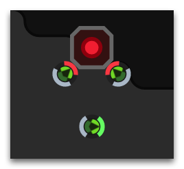
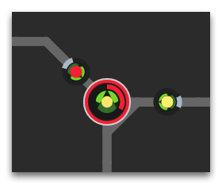

Apart from the base resources – energy and minerals – Screeps has an extra resource, power, which is more valuable and rare.
Power Banks
Power can be gathered only from structures called Power Banks that appear from time to time in neutral empty rooms that divide living sectors on the map. Each Power Bank contains a random amount of power that can be obtained by destroying the structure. Due to the high-energy nature of these structures, 50% of damage applied to them bounce back to the attacking creep, so take care to have healers in your team.

Power Spawns
What do you need this resource for? By transferring power from banks sites to your base with the help of carriers and building a special structure called Power Spawn (available at RCL8), you can register power in your account via the StructurePowerSpawn.processPower method. Registered power points allow to create and develop a new type of creeps with abilities directly linked to your account level: power creeps.

Power Creeps
This is still under development, see the discussion here.
Power creeps may be defined as "hero units" from other strategy games. They do not age, can be respawned repeatedly in case of defeat, have no standard skills of regular creeps, but can use special unique Powers such as increasing the capacity of an energy source or mineral deposit, instant completion of spawning/building, bonuses for attack, defense, and/or work effectiveness of other regular creeps around, long-range sniper shots, remote blocking of enemy creeps and structures activity, and many more. You select the power you need in your account from the list of available powers and then gradually develop it by means of points from gathered and registered power resources. You can have as many power creeps and powers as the points you gathered allow.
Power Rank
All the power resource points that you have registered during a month are accounted in your Power Rank for the current month. As the month ends, the Power Rank is reset to zero, while the points themselves that allow you to create and develop power creeps are not lost, but stored in your account for good in the same way as the Global Control Level is.